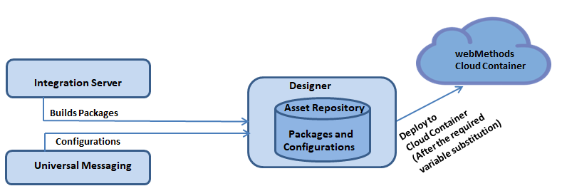

Deploying to webMethods Cloud Container
Cloud deployment is the process of deploying user-created packages and configurations that reside within on-premise runtimes or repositories to Cloud Container. Using Software AG Designer you can seamlessly deploy your on-premise Integration Server packages and configuration assets to solutions present on Cloud Container.
Note:
In the Cloud Container context, configuration assets are limited to Integration Server and Universal Messaging configurations.
Software AG Designer allows you to deploy the Integration Server packages or configuration assets that you have created, verified, and tested on on-premise Integration Server or Universal Messaging to Cloud Container. When you initiate the deployment from Designer, Integration Server packages and configuration assets are built from Integration Server, and are published to an asset repository present in Software AG Designer.
After performing variable substitutions to make the on-premise configuration data compatible for Cloud Container, you can publish the packages and configurations from the asset repository to a remote repository provisioned for the tenant on Cloud Container.
Platform Manager plug-ins for Integration Server and Universal Messaging continuously monitor the remote repository on Cloud Container. When a fresh deployment is detected, Platform Manager plug-ins deploy the Integration Server packages and configuration assets to respective runtime instances on Cloud Container.
Note:
Deploying assets to Cloud Container using Software AG Designer eliminates the previous need to install or invoke webMethods Deployer on cloud for the purpose of Cloud Container.
The following figure provides a high-level basic overview of the process involved in deploying on-premise Integration Server packages and configuration assets to Cloud Container.
